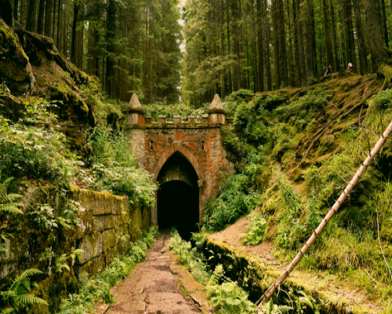

After a long and uneventful day of travel you notice that the daylight is starting to fade, which was kind of disappointing because you were hoping you’d have run into a bear by now for supper. Luckily you also notice ruins building up to the typical image of a dungeon entrance—a nice crumbling, gaping entrance that teases you with the promise of dark murky catacombs, just how you like it.
Rumored dungeon or not,
here I come. [In progress]
Back to Home